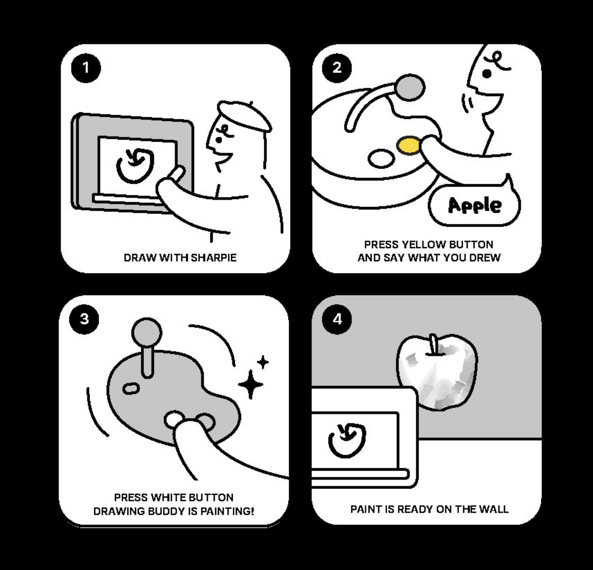
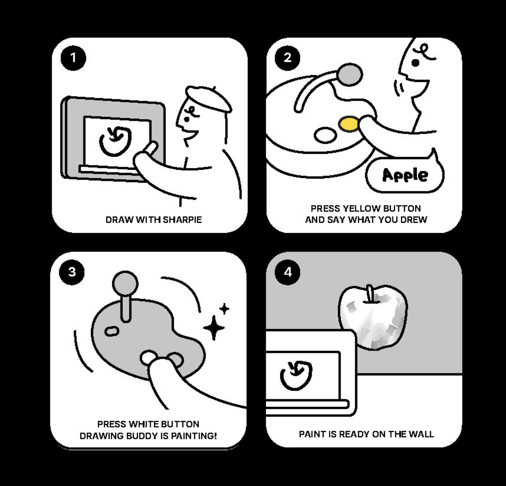

Art Gallery
Creative Tools Design
Drawing Buddy – Interactive Art Tool for Kids
 

Drawing Buddy is an AI-augmented co-creative system designed to bridge
the gap between traditional art and modern technology, fostering creativity, confidence, and
skill development in K-12 education.
By integrating tactile interactions, real-time AI
feedback, and user-centered design, it transforms traditional artistic practices into accessible
and engaging learning experiences.
While digital art tools are abundant, they often lack the tactile,
hands-on experiences crucial for the skill development of young learners. Traditional art
mediums, despite their rich educational potential, are intimidating to beginners and children
due to technical demands, discouraging participation.
Drawing Buddy addresses these challenges by introducing AI-guided real-time feedback and hybrid
digital-tactile interactions, making traditional art more appealing and approachable.
Inspiration
(a) Consultation with art teachers at John O’Connell
High School.
(b) A student expressing difficulty in understanding the image’s
structure.
(c) Gathering feedback from a group of children (aged 5–10) at Maker
Faire.
Earlier this year, while teaching an art class at John O'Connell High
School, I observed a stark contrast in students' attitudes toward artistic creation. Some
students completed tasks half-heartedly just to earn credits, while others were fully immersed.
Many, however, lacked confidence and gave up altogether.
Conversations with art teachers revealed that traditional media remain the primary teaching
tools, yet many students struggle when faced with a blank canvas. One student attempted to draw
the video game character Yoshi but found it difficult to maintain proportions and structure,
visibly frustrated. Another tried to depict fireworks in the night sky but felt unable to
translate her vision onto paper, displaying clear disappointment by the end of the session.
These experiences resonated with my own childhood struggles in art due to a lack of guidance and
confidence.
This phenomenon aligns with Davis’s “U-shaped theory,” which highlights a decline in children’s
interest and confidence in drawing as they grow older, driven by educational pressures and the
prioritization of standardized assessments.
On that day, I taught six periods, interacting with around 180 students and speaking with
several art teachers. A common theme emerged: many students did not know how to start drawing or
felt stuck after taking the initial steps. They expressed that while they could follow
step-by-step guidance in class, they struggled to create independently, unable to translate
mental images into sketches on paper.
Initial Design and Testing
To help students overcome these challenges, we designed the first prototype of the Drawing Buddy
(see picture below). This compact drawing box featured a lightbox at its base to record user
input.
When needed, the system would generate suggestions for the next steps in the creative process
and project them onto the paper under the lightbox. This feature aimed to provide actionable
visual guidance, helping users overcome hesitation or a lack of inspiration.
We also brought this drawing assistant to Maker Faire to collect additional user feedback.

Design Concept

Initial Prototype
Feedback and Design Goals
Later iterations highlighted the need for a more flexible medium, such as larger canvases and
support for younger users. This led to the development of a second version of Drawing Buddy,
which functioned more like a toy. It included a control dial with generation buttons and a
microphone, allowing users to receive drawing suggestions projected directly onto their canvas
or medium of choice.
Accessibility: Develop an intuitive system adaptable to various skill
levels.
Interactivity: Provide real-time feedback and actionable guidance.
Creativity First: Encourage exploration and self-expression without fear of
mistakes.
Iterative Design:Continuously refine the system based on user feedback.
Gathering Feedback for AI system
Second version of Drawing Buddy
Takeaways and Future Plan

Sharing insights at the Jacobs Hall Annual Expo
Design Philosophy
Developing Drawing Buddy taught me that creativity thrives when supported by a system that values both structure and freedom. It’s not just about removing barriers like fear of failure, but about creating moments of discovery—where a child realizes, “I can figure this out.” I learned that true engagement comes when tools feel like collaborators rather than instructors, and when they invite curiosity instead of dictating outcomes.
Moving forward, I’m interested in exploring how design can create more of these “aha” moments, not by giving all the answers, but by leaving space for users to surprise themselves.
Concept Art Generation Pipeline
I explored different art style pipelines for 3D artists to generate stable, realistic results for scene design. This pipeline, created with ComfyUI and Stable Diffusion, is designed as an extensibility solution that redefines the process of creating realistic environment concept art. I tested and integrated it with TouchDesigner to generate real-time images, and it can be further integrated into Unity for quickly generating art backgrounds for 2D games.
Output